23:58/16.07.2022
Yuridik shaxslar uchun ham gaz va elektr narxi vaqtincha oshmaydigan bo'ldi
O'zbekistonda xukumat qarori bilan yuridik shaxslar uchun elektr energiyasi va tabiiy gaz narxi 15 iyuldan oshishi belgilangan edi. 14 iyul kuni Energetika vazirligi narxlar oshirilishi kechiktirilgani haqida xabar berdi.
Muharrir tanlovi
BarchasiSo'nggi yangiliklar
Xiomi avgustda o'zining birinchi elektrobolini namoyish etdi
O'zbekistonda jazirama qaytmoqda. Elektr ta'minot bunga tayyormi?
Ispaniyada jazirama oqibatida 360 kishi vafot etdi
Bayden yaqin sharq bo'yicha turnerini yakunladi
Ozarbayjon va Armaniston bir-birini chegarada otishma sodir etishda aybladi
Ko'proq yangilik
Dolzarb xabarlar
Ukraina HIMARS bilan Rossiyaning asosiy ustivorligini yo'qqa chiqarmoqda. Rossiya armiyasi unga chora topishi mumkinmi?
HIMARS sovetlarning tizimlaridan nimasi bilan farqlanadi?
-
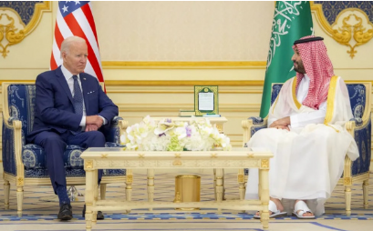
"Mushtlar uchrashuvi". Bayden prezident sifatida ilk bor Saudiyaga keldi va MBC bilan ko'rishdi
-
Bakanov-bolalikdagi do'st, Benidiktova ham eski safdosh Zelenskiy ularni muxim lavozimlardan cheklashishini izohladi
-
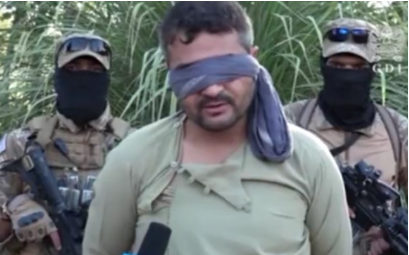
"Tolibon" O'zbekistonda snaryad otgan guruh a'zolarini ushlaganini ma'lum qildi
-
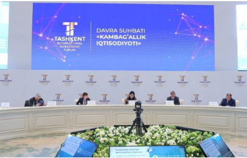
1 porsiya osh 130 ming, 1 dona somsa 70 ming so'm. Xashamatli forumdagi davlat xarjatlari
Intervyu
Intervyu-
"Rivojlanishni istagan davlat borki, avvalo univarsitetlarini rivojlantiradi"-AKFA universiteti rektori bilan suhbat
-
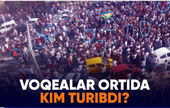
Qoraqalpog'istondagi voqealar ortida ortida qanday kuchlar turibdi?-siyosiy tahlilchilar bilan suhbat
-
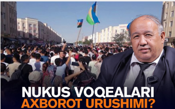
Qoraqalpog'istondagi mitinglar axbarot hujumlari ta'sirida boshlandimi?-siyosatshunos bilan suhbat
-
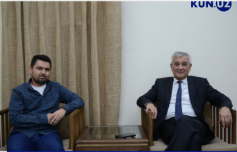
"Tolibon"ning muammolari, do'stlari va O'zbekiston bilan aloqalari-elchi bilan intervyu
Kun.uz surushturuvi
Maqolalar
Barchasi-
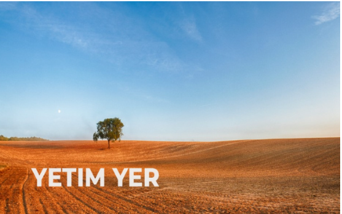
Yerlarimiz shiddat bilan ishdan chiqayapti, chunki...tayinli egasi yo'q
Agar yer singari ishlab chiqarish vositalari xususiy qo'llardabo'lmasa, katta ehtimol bilan ular samarasiz ishlatiladi. Yerga xususiy egalik qilish xuquqi nafaqat agrar davlat rivoji uchun, balki butun boshli xalqning irsiy fondini saqlab qolish uchun ham kerak. Bu xaqda Kun.uz kolumnisti Shaxzod Yo'ldoshboyev fikr yuritadi.
-
Axborot kurashi avjida.Tik Tok ochilishi va unda milliy tashviqot olib borilishi kerak
Vikipedia to'ldirish bilan maqsadga erishib bo'lmaydi.
-
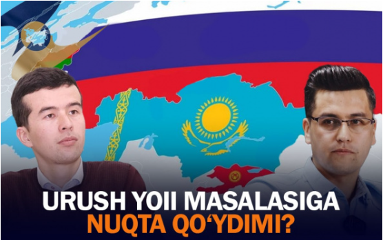
EOIIga kirish yanada xavfli bo'lib qoldi. JSTga a,zolikni tezlashtirish kerak-iqtisodchilar
Yevrosiyo ittifoqiga qo'shilsak, tashqi savdo siyosatiga mustaqilligimizni yoqotamiz, deydi iqtisodchi Mirkomil Xolboyev. Yana bir iqtisodchi Valijon To'raqulovning fikricha, xozirgi noaniq vaziyatni imkoni boricha EOIIga a'zo bo'lmay turilganimaqbul;biz uchun ustuvor vazifa Jahon savdo tashkilotiga kirish bo'lishi kerak.
-
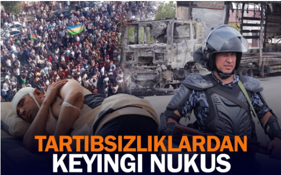
"Provokatorlar ichkaridan turib odamlarni boshqarishdi"-ikki kunlik tartibsizliklardan keyingi Nukus
1 iyul kuni Qoraqalpog'istonda boshlangan namoyishlar ommaviy tartibsizliklarga aylanib ketdi.
-
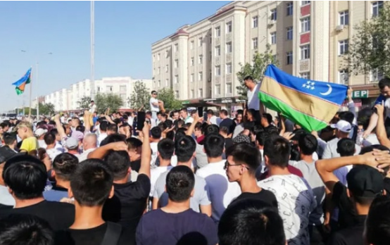
Ura deganda qo'shilib ketish qahramonlik emas
Qoraqalpog'istonda bo'lgan voqealar hammani birdek qayg'uga soldi.
-
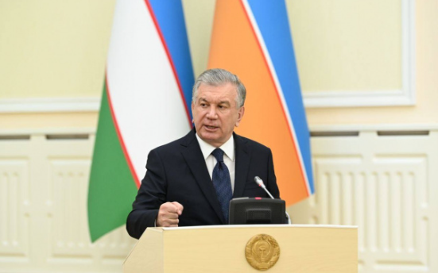
Qaltis paytdagi qat'iy vatog'ri qadam
KOnstitutsiya loyihasi e'lon qilinib, muhokamalar davom etarkan, rasmiylar aholi fikrini eshitishga tayyorligini aytib kelishdi. Bunday vaziyatda prezident oqilona va pragmatik yo'l tutdi.
Biznes
Xamkorlik qilish-
.png)
HUAWEI kompaniyasi MateBook D 15 - ish, o'qish va sayohat uchun mo'jallaggan komputer sotuvi boshlanganini e'lon qiladi
-
.png)
Mirabad Avenue yaqinlashib kelayotgan Qurbon Hayiti munosabati bilan 18% chegirma e'lon qiladi
-
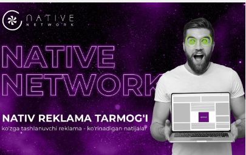
Native Network- O'zbekistondagi ilk bevosita reklama tarmog'i o'z faoliyatini boshladi
-
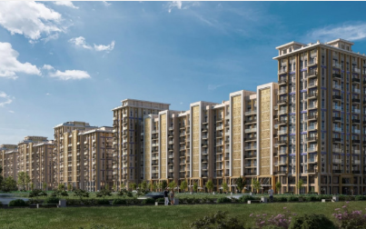
Mirabad Avenue rezidensiyasining uchinchi bosqichida yangi uylar sotuvi boshlandi
Videoyangiliklar
Barcha maqolalar.png)
15:38/18.07.2022
So'nngi 4 yilda Qoraqalpog'istonda YAIM va axoli daromadlari 2 barobardan ko'proq oshdi-vazir o'rinbosari
15:38/18.07.2022
Tolibon O'zbekistonga snaryad otgan guruh azolarini ushlaganini malum qildi
Fotoyangiliklar
Barcha maqolalar16:03/17.07.2022
So'nngi 4 yilda Qoraqalpog'istonda YAIM va axoli daromadlari 2 barobardan ko'proq oshdi-vazir o'rinbosari
14:58/15.07.2022